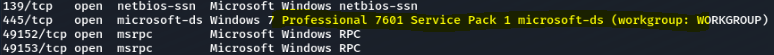

Blue Writeup
Who am I?
Blue is rated as an easy beginner machine
NMAP result
Vi kjenner igjen netbios fra windows Vi ser også noe intersant som "HARIS-PC" dette kan være en bruker vi har mye informasjon om smb som versjon, account, Workgroup etc intresant her er port 135,138 og 445 De andre er service porter for rpc
Port 139
we manage to get the workgroup.We try to get into one of the shares
we manage to get into the share and users shares. Tried to see if there is a way to find the flags but no luck
Since we know one of the users name is haris, we can try to login as haris. We had no luck
Port 135
We tried to use rpcclient with no username
All we got was error accecc denied
Port 445
After some research we found that the windwos 7 professional 7601 service pack 1 is a known vulnerability. EternalBlue

we got access to a meterpreter now lets see if we can find some flags. We do get a windows shell
We want to use a meterpreter shel and convert it from windows shell
we exit out of windos and but the sessions in the background (1) we use the shell_to_meterpreter
we seadd the session, we can now try to interact with the session
We can now use the meterpreter shell instead and move around
We got the flag for root: ( ff548eb71e920ff6c08843ce9df4e717 )
We also see Haris as a user
We can now submit our flags